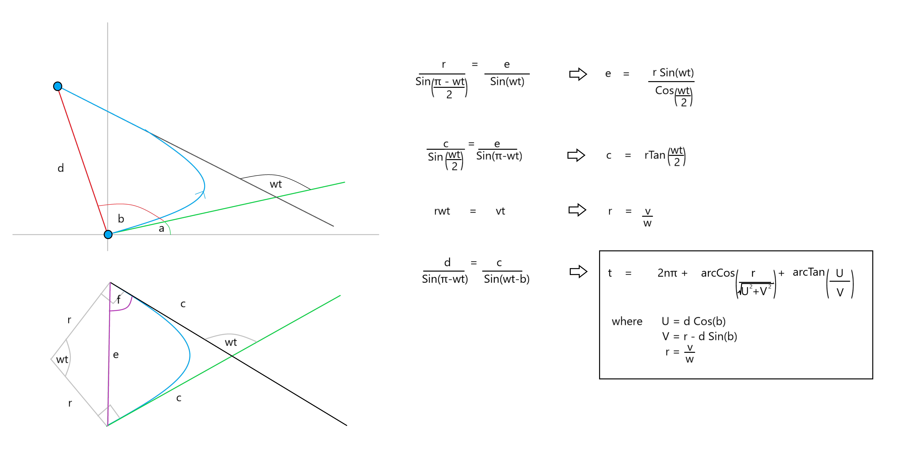

Note
Click here to download the full example code or to run this example in your browser via Binder
Creating Smooth Transitions Between Coordinates
This is a demonstration of two methods for calculating transition models between given
coordinates in a Cartesian state space.
These methods are intended to be used in conjunction with
MultiTransitionMovingPlatform, which can be passed a list of models and
model-durations, such that, for example, the platform could undergo constant velocity transition
for 5 minutes, followed by constant acceleration for 2 minutes.
Constant Acceleration
The first method is get_smooth_transition_models().
This method takes a series of 2D Cartesian coordinates, and returns a chain (list) of
ConstantTurn transition models, alongside a list of transition times that each
respective model should be used for.
Where required, the method also appends intermediate, custom, linear acceleration transition
models Point2PointConstantAcceleration which accelerates (/decelerates) the platform
to an appropriate speed whereby it arrives at the next destination coordinates on-time, or
allows it to arrive before-hand, whereby it stops at the destination until the designated time
(using the Point2PointStop custom transition model).
The method chooses the least change in bearing (\(b\)). Therefore altering its turn-rate (\(w\)) such that it turns left if its target destination is to its left (\(b\in [0, 180) \Rightarrow w > 0\)), and right if its destination is to the right (\(b\in (-180, 0) \Rightarrow w < 0\)).
A Simple Demo of Constant Acceleration
Start with the target (platform) facing top-right (45 degrees clockwise from North). The target begins at the origin, at time = start.
Expect the target to make a sharp, left-turn to get on a course toward the second coordinate at (-10, 10).
Plotting the three target destinations (in blue) and the target initial bearing in green:
from smartfusion.types.array import StateVector
from smartfusion.types.state import State
ux = 1 # initial x-speed
uy = 1 # initial y-speed
platform_state = State(StateVector((X[0], ux, Y[0], uy)), timestamp=start)
fig = plt.figure(figsize=(10, 6))
ax = fig.add_subplot(1, 1, 1)
ax.set_xlabel("$x$")
ax.set_ylabel("$y$")
ax.axis('equal')
ax.scatter(X, Y, color='lightskyblue', s=100, edgecolors='black')
ax.plot((X[0], X[0] + 2*ux), (Y[0], Y[0] + 2*uy), color='lightgreen', linewidth=2)
[<matplotlib.lines.Line2D object at 0x131bcd9a0>]
get_smooth_transition_models() requires the initial state of the
platform, x and y coordinates, times to be at each respective coordinate and the platform
turn-rate.
The ‘times’ parameter will dictate the times at which the target should be at each respective target coordinate. Hence, the first coordinate transition should take 10 seconds. The target starts off with insufficient speed, so we expect it to accelerate once out of the turn so as to get to the destination in a total of 10 seconds.
The target will have a constant turn rate of 25 degrees per second - a sharp turn, partly to guarantee that it can reach its destination in time, but also as initial velocity and angle turn-rate are constrained according to the following formulae (derived for the case where turn-rate (\(w\)) and initial bearing (\(a\)) are positive and \(< 180\) degrees):
{kind=link}
where we must have that \(c \leq \frac{d\sin(b)}{\sin(wt)}\). Ie. the turn must be completed without the target ‘over-shooting’ the destination. Along with the constraint that the turn must be possible - if the turn-rate is too low, the target may never turn enough to hit the destination.
from smartfusion.simulator.transition import create_smooth_transition_models
transition_models, transition_times = create_smooth_transition_models(initial_state=platform_state,
x_coords=X,
y_coords=Y,
times=times,
turn_rate=np.radians(25))
This gives the transition times/models:
from smartfusion.models.transition.linear import KnownTurnRate
for transition_time, transition_model in zip(transition_times, transition_models):
print('Duration: ', transition_time.total_seconds(), 's ',
'Model: ', type(transition_model), end=' ')
if isinstance(transition_model, KnownTurnRate):
print('turn-rate: ', transition_model.turn_rate)
else:
print('x-acceleration: ', transition_model.ax, end=', ')
print('y-acceleration: ', transition_model.ay)
Duration: 4.29188 s Model: <class 'smartfusion.models.transition.linear.KnownTurnRate'> turn-rate: 0.4363323129985824
Duration: 5.70812 s Model: <class 'smartfusion.simulator.transition.Point2PointConstantAcceleration'> x-acceleration: -0.12692604565249116, y-acceleration: 0.06664606400905905
Duration: 3.856929 s Model: <class 'smartfusion.models.transition.linear.KnownTurnRate'> turn-rate: 0.4363323129985824
Duration: 16.143071 s Model: <class 'smartfusion.simulator.transition.Point2PointStop'> x-acceleration: 0.11502454961364292, y-acceleration: 0.29533082096657887
The last transition model calls a Point2PointStop transition model to bring the target
to a complete stop (as a linear acceleration model would require the target to over-shoot the
destination and turn-back on itself in order to arrive at the correct time).
Create a MultiTransitionMovingPlatform using the output transition models and times.
from smartfusion.platform.base import MultiTransitionMovingPlatform
platform = MultiTransitionMovingPlatform(states=platform_state,
position_mapping=(0, 2),
transition_models=transition_models,
transition_times=transition_times)
Plot the platform path (light blue). Acceleration is shown by (dark blue) marker density (further apart => faster). The deceleration to 0-velocity at the 3rd target coordinate is clear. (Platform may be slightly off as transition times are rounded down).
platform_coords = []
for i in range(int((times[-1] - times[0]).total_seconds())):
platform_coords.append((platform.state.state_vector[0], platform.state.state_vector[2]))
platform.move(timestamp=start+timedelta(seconds=i))
ax.plot([coord[0] for coord in platform_coords],
[coord[1] for coord in platform_coords],
color='lightskyblue',
marker='.',
markerfacecolor='blue',
linewidth=3)
fig
Running through multiple coordinates with Constant Acceleration
A demonstration using several coordinates.
np.random.seed(101)
# Move in positive x-direction.
X = np.array([0])
for i in range(11):
X = np.append(X, X[-1] + np.random.randint(20, 100))
print('X = ', X)
# Vary y in [-5, 5).
Y = np.array([0])
for i in range(11):
Y = np.append(Y, np.random.randint(-50, 50))
print('Y = ', Y)
# 1 hour to get to each coord.
times = [start+timedelta(seconds=3600*i) for i in range(len(X))] # Total of 12 hours
fig = plt.figure(figsize=(10, 6))
ax = fig.add_subplot(1, 1, 1)
ax.set_xlabel("$x$")
ax.set_ylabel("$y$")
ax.axis('equal')
ax.scatter(X, Y, color='lightskyblue', s=100, edgecolors='black')
X = [ 0 31 121 204 299 328 425 485 509 592 652 732]
Y = [ 0 42 14 -45 -38 43 -10 -1 33 -42 -21 9]
<matplotlib.collections.PathCollection object at 0x155b4fdc0>
initial_vx = (X[1]-X[0]) / 3600 # initial x-speed
initial_vy = 0 # initial y-speed
platform_state = State((X[0], initial_vx, Y[0], initial_vy), timestamp=start)
transition_models, transition_times = create_smooth_transition_models(initial_state=platform_state,
x_coords=X,
y_coords=Y,
times=times,
turn_rate=np.radians(0.1))
platform = MultiTransitionMovingPlatform(states=platform_state,
position_mapping=(0, 2),
transition_models=transition_models,
transition_times=transition_times)
platform_coords = []
sim_rate = 100 # 'sim_rate'-seconds each time-step.
for i in range(int((times[-1] - times[0]).total_seconds()/sim_rate)):
platform_coords.append((platform.state.state_vector[0], platform.state.state_vector[2]))
platform.move(timestamp=start+timedelta(seconds=sim_rate*i))
platform_coords.append((platform.state.state_vector[0], platform.state.state_vector[2]))
ax.plot([coord[0] for coord in platform_coords],
[coord[1] for coord in platform_coords],
color='blue',
linewidth=3)
fig

Constant Jerk
The next method is create_models()
This method takes a series of states with Cartesian kinematic state space elements and returns a
chain (list) of ConstantJerkSimulator transition models and transition times.
The ConstantJerkSimulator type of transition model is an implementation of a
noiseless, constant jerk transition in the kinematic, Cartesian subspace of the state space.
The user will need to provide both initial and final position and velocities. This can be of any dimension. For example, constant jerk in the space \((x, \dot{x}, y, \dot{y})\) and \((x, \dot{x}, y, \dot{y}, z, \dot{z})\) are valid (elements need not be in this order, as a position mapping and velocity mapping can be passed to the method to specify where the position and velocity components are respectively).
A Simple Demo of Constant Jerk
We will use the same set-up as before, but specify an initial and final velocity as well.
start = datetime.now()
position_mapping = (0, 2)
velocity_mapping = (1, 3)
states = [
State(StateVector([0, 1, 0, 1]), start), # at origin, pointing NE
State(StateVector([-10, 0, 10, -2]), start + timedelta(seconds=5)), # at (-10, 10), pointing N
State(StateVector([-20, 0, 0, 0]), start + timedelta(seconds=10)) # at (-20, 10), 0 velocity
]
Plotting the three target destinations in blue and orientations in green:
fig = plt.figure(figsize=(10, 6))
ax = fig.add_subplot(1, 1, 1)
ax.set_xlabel("$x$")
ax.set_ylabel("$y$")
ax.axis('equal')
ax.scatter(*zip(*[state.state_vector[(0, 2), :] for state in states]),
color='lightskyblue', s=100, edgecolors='black')
for state in states:
x, vx, y, vy = state.state_vector
ax.plot((x, x+vx), (y, y+vy), color='lightgreen', linewidth=2)
To create the list of transition models and durations, pass the list of states, position mapping
and velocity mapping (optional) to the
create_models() method.
from smartfusion.simulator.transition import ConstantJerkSimulator
transition_models, transition_times = ConstantJerkSimulator.create_models(states,
position_mapping,
velocity_mapping)
for transition_time, transition_model in zip(transition_times, transition_models):
print(f"Duration: {transition_time}s, Model: {type(transition_model)},"
f"Initial Accels: {transition_model.init_A}, Final Accels: {transition_model.final_A}, "
f"Jerk Values: {transition_model.jerk}")
Duration: 0:00:05s, Model: <class 'smartfusion.simulator.transition.ConstantJerkSimulator'>,Initial Accels: [-3.2, 2.4], Final Accels: [2.8000000000000003, -3.6], Jerk Values: [1.2, -1.2]
Duration: 0:00:05s, Model: <class 'smartfusion.simulator.transition.ConstantJerkSimulator'>,Initial Accels: [-2.4, -0.7999999999999999], Final Accels: [2.4, 1.6], Jerk Values: [0.96, 0.48]
Create a MultiTransitionMovingPlatform using the output transition models and times.
Plot the platform path (light blue).
while platform.timestamp < states[-1].timestamp:
platform.move(timestamp=platform.timestamp+timedelta(seconds=0.01))
ax.plot(*np.array([state.state_vector[(0, 2), :].flatten() for state in platform.states]).T,
color='lightskyblue', linewidth=3)
fig
Running through multiple coordinates with Constant Jerk
A demonstration using several coordinates.
ndim_state = np.random.randint(4, 6)
states = [State(np.random.rand(ndim_state, 1), start + timedelta(minutes=i))
for i in range(5)]
for state in states:
state.state_vector[position_mapping, :] *= 100 # increase distances between states
if ndim_state > 4:
for state in states[1:]:
for i in range(4, ndim_state):
# non-kinematic elements stay the same
state.state_vector[i] = states[0].state_vector[i]
fig = plt.figure(figsize=(10, 6))
ax = fig.add_subplot(1, 1, 1)
ax.set_xlabel("$x$")
ax.set_ylabel("$y$")
ax.axis('equal')
ax.scatter(*zip(*[state.state_vector[(0, 2), :] for state in states]),
color='lightskyblue', s=100, edgecolors='black')
for state in states:
x, vx, y, vy, *_ = state.state_vector
ax.plot((x, x+vx), (y, y+vy), color='lightgreen', linewidth=2)
while platform.timestamp < states[-1].timestamp:
platform.move(timestamp=platform.timestamp+timedelta(seconds=0.01))
ax.plot(*np.array([state.state_vector[(0, 2), :].flatten() for state in platform.states]).T,
color='lightskyblue', linewidth=3)
fig
Total running time of the script: ( 0 minutes 1.338 seconds)